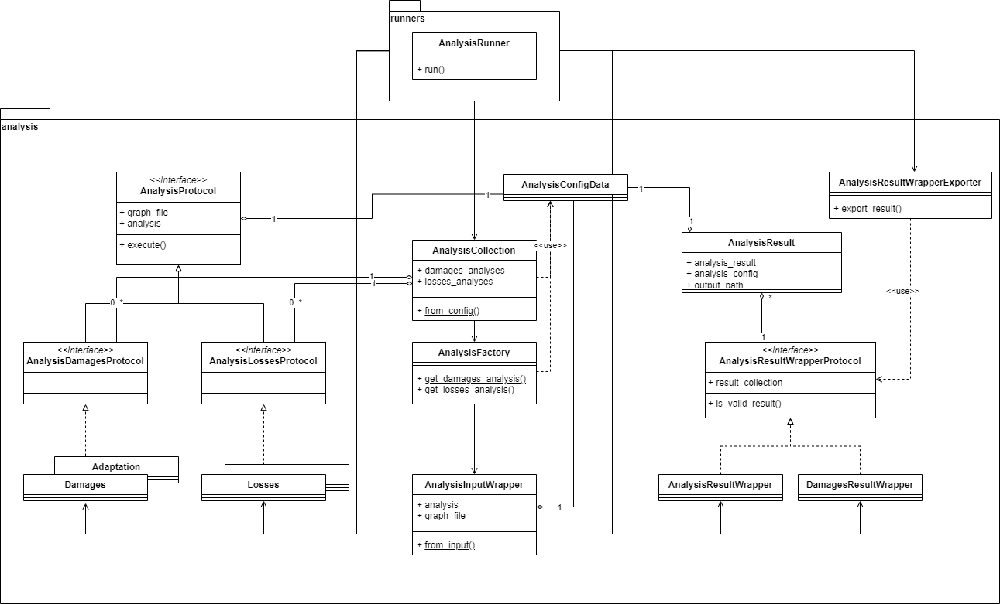

Analysis#
Analysis#
This module contains all protocols and classes related to performing an analysis on a graph or network. Analyses can be identified as:
damages: calculating the direct damages to the infrastructure (roads) due to a hazard (e.g. flood),losses: calculating the economical losses that are a consequence of the damage to the infrastructure,adaptation: calculating the benefit/cost-ratio of given adaptation options.
Each analysis should comply to the AnalysisProtocol.
General class overview#
The following diagram describes the relations between the most relevant entities of the ra2ce.analysis (sub-)package.
 |
|---|
Ra2ce analysis overview |
Configuration#
The analyses can be configured in analysis.ini or directly in an AnalysisConfigData object.
Lifecycle#
An analysis is instantiated by the AnalysisRunner via the AnalysisFactory and added to an AnalysisCollection.
Then the AnalysisRunner runs the analyses in the AnalysisCollection.
Add diagram
Input/output#
An analysis consumes an AnalysisInputWrapper, containing analysis parameters from the configuration, the graph/network and some additional settings.
The AnalysisRunner stores the output of an analysis in an AnalysisResultWrapperProtocol, a shell dataclass containing a collection of results (AnalysisResult), each of them relating an “analysis result” (GeoDataFrame) with the configuration used (AnalysisConfigData.ANALYSIS_SECTION).
This output can be exported to different formats using the AnalysisResultWrapperExporter.
Overview of analyses#
TODO